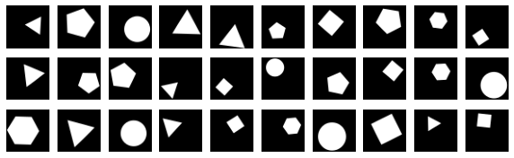

Project: Flatland
Contents
Project: Flatland#
Task is slightly inspired by the book Flatland. You will have to classify images by ‘calculating’ number of corners a figure in that image has using deep learning.

Train set contains pictures of the following shapes: circles, triangles, squares, pentagons and hexagons.

Tain set - DOWNLOAD. In Colab you can download it using curl.
For your submission create a new github repo and upload code/notebooks and final model (.h5 file). Next try to go to the link flatland evaluation and you should see message ‘Welcome to Flatland!’. This means that evaluation service is running and you can submit your own model by calling https://us-central1-aiprimer.cloudfunctions.net/flatland?model_link=[PATH TO YOUR .h5] (be patient, it can take a while).
Evaluation script and corrects labels as follows:
import numpy as np
data = np.load('flatland_train.npz')
X = data['X']
y = data['y']
y[y != 0] -= 2 # Correct labels so that triangle is mapped to class 1
X = X / 255. # Scale down to range [0, 1]
# Construct and train your model (don't forget train/test split and other tricks)
model = ...
# Save the model and upload to git
model.save('model.h5')
For faster training you can use colab, just change it GPU mode by setting it at Edit -> Notebook settings -> Hardware accelerator.
Leaderboard#
To add some gamification submissions might end up in a leaderboard (we will agree on that as the course progresses). Each model will be evaluated on two test sets - one which closely matches train set and slightly more advanced one which nature will be revealed at the end of the course.
Passing benchmarks:
Grade |
Hints |
Test set (simple) |
Test set (adv.) |
|---|---|---|---|
5 |
Simple NN |
>70% |
any |
6 |
Simple NN |
>75% |
any |
7 |
CNN |
>80% |
any |
8 |
CNN |
>85% |
any |
9 |
CNN |
>90% |
any |
10 |
Transfer learning |
>90% |
>80% |
Additional task: if you have beated advanced set and have model that gives nearly ideal accuracy, try to make it as small as possible.